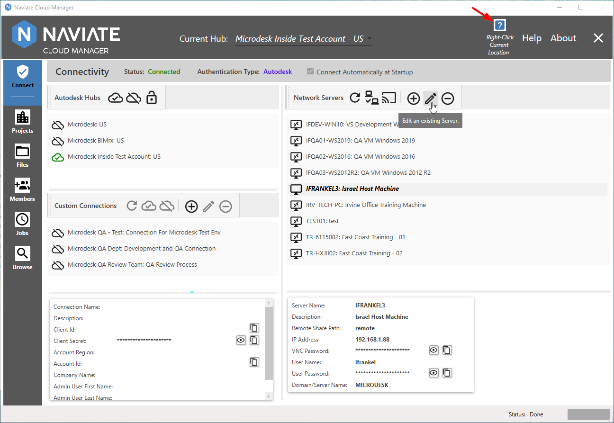
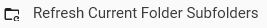
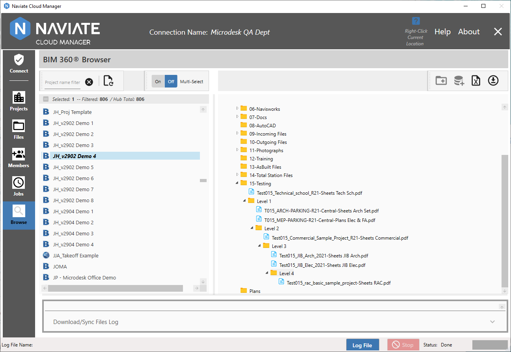

New Features
Upcoming Release (currently being tested pending general release)
The v2.10 release contains the following new features:
Context Aware Help
Naviate Cloud Manager now features a comprehensive context aware help system. Wherever you are in the application, simply right click on a button, data list or other control, and a help menu is generally available.

Clicking on the item in the Help menu opens up the User Guide and navigates to the selected location.
From here, the user may navigate wherever they require within the User Guide. It is no different than if they has pressed the standard Help button.
Additionally, please note the Context Help availability indicator.

Whenever there is Context Help available at the current cursor location, the Context Help Availability Indicator is enabled. This makes it easy to know whenever Context Help is available at the current cursor location. It is often available even when a control is disabled, so be sure to watch for it. The exception is when certain operations are taking place, such as accessing Job Listing Help while editing a Job Description. Therefore, always be sure to check the indicator. If it is not currently available for a disabled item, it will likely become available once the edit, processing or other operation is complete.
User Guide Glossary
The new Glossary provides definitions of common terms as used in the AEC Industry. These definitions are available via browse and look-up standard reference:
Often, Glossary entries will include a link to an external resource. This is done by simply pressing the hyperlink, as shown above.

In this case, additional Autodesk® help on the topic is referenced.
Additionally, Glossary entries can be accessed directly from Naviate Cloud Manager where appropriate.

Introduction of Proprietary Cloud-based APIs
Initial release of the new Naviate Cloud Manager proprietary cloud-based APIs. These APIs--used internally--consolidate and simplify access to the Autodesk® Forge® APIs for the developer in a uniform, consistent and coherent manner. This approach improves system performance, troubleshooting, security and development time. This initial release replaces previous direct calls in several areas. Future releases will incorporate migration of remaining, existing functionality to the new platform. Going forward, all new features will be implemented via this new, API platform.
Enforcement of Admin Security for creation of Projects.
Only those users having a Hub Access Level of Account Admin are now allowed to go to the Projects module.
Enforcement of Admin or Project Security for Members.
Users having Project Member status are now restricted from accessing the Members module. This means that only users having Account Admin or Project Admin privileges can access the module.
BIM 360®/Autodesk® Construction Cloud Project Awareness and Display
Whenever a project is displayed in Naviate Cloud Manager, the appropriate logo now appears to indicate whether it is a BIM 360® or ACC project.
Apart from displaying the For the Field top level folder, ACC projects appear and are handled the same as are BIM 360® projects.
The previous project logo has been replaced everywhere with the new, project type-aware logos for BIM 360®  and ACC :
and ACC :
- Files: Local Projects display
- Files: Cloud Projects display
- Jobs: Project list display
- Jobs: Project detail/selection tree
- Members: Project listing
- Browse: Project listing
Add Hub Members
Naviate Cloud Manager now also supports adding new Members to the currently selected Hub. These new Members can be added quickly and easily as required.
After pressing the new  button, the following screen appears:
button, the following screen appears:

One or more Email Addresses are added by either typing them in or copying and pasting from another source. Pasting can be done by either using the supplied button, or by pressing <Control>V. As stated in the dialog box, entry of a Default Company and Role is required.
After pressing Add and once the new email addresses have been added, the new Hub Members appear on the Hub Member list with a status of Not Invited. This is because they have not yet been invited to a project. However, to assist in this process, all newly added Hub Members are automatically selected. This makes it easy to then assign a project and Import them. Once they are invited to at least one project, their Hub Members status changes to Active.
Note—You will probably need to Refresh the Hub Member list to display the updated Hub status after importing a newly added Hub Member to a Project for the first time.
Set/Update Hub Members Default Company
Naviate Cloud Manager now supports setting the Hub Member Default Project. This may be the first time a Default Company is set for the Hub Member, or it can involve changing it to a different company than the one currently assigned.
The process is simple. The user must select a Company to be the new Default Company. They must also select one or more Hub Members to whom the Default Company will be assigned. Pressing the Default Company button then performs the assignment.

A Company must be selected--assigning a blank company is not permitted. Assigning a company that is already assigned will safely skip the already-assigned Hub Member and continue.
Add project filter to select all Hub Members for a project
Selecting a project from the new project dropdown filter list filters all Hub Members to include only those belonging to the selected project.

Of course, this new filter may be used in combination with the other Hub Member filters.
Note: The Hub Member project filter makes it easy to select all members for a project then assign them to one or more additional projects.
Jobs Export Adds Support for Revit® 2023
All Naviate Cloud Manager Export Job Types—DWG, NWC and PDF—now support Revit® 2023.
Jobs Color Selection Added to Export PDF
When defining an Job Type of Export and PDF is selected for the Export Type, the user can now select the color depth type to be used--Blacklines, Grayscale or Color.
If Auto-Detect is selected then Naviate Cloud Manager will use the CM_PrintSettings stored with the Revit® model. When processing jobs that have not been updated to support Colors selection, the application defaults to Auto-Detect. When no CM_PrintSettings have been stored with the Revit® model then the PDF Export will be printed with Blacklines.
Browse Projects Force Publish if No Syncs Since Last Publish
Naviate Cloud Manager now supports publishing of all Revit® Cloudshared Models—including those where no syncs were made on the main file since the last publish.

Also, as part of this update, two new menu items on the Project detail listing shown above has been added. Select the menu item at any time to completely refresh the current project tree.
When located on a folder, press the  menu item to refresh just the subfolders for the currently selected folder.

These new refresh options are extremely useful to update the current treeview display when publishing models.
Browse module enhanced help and workflow for upload of folders and files to BIM 360®
When invoking Update Project Database and Local Folder/File Repo:

The initial dialog box that now appears is much more informative:

It first explains how the local repository is used to update BIM 360®, in what manner the repository location is assigned and how it may be re-assigned or changed to a different location. It then describes the potential role of the project template in creating these local repositories.
Next, it describes via numbered steps precisely what occurs when the Update button is pressed, including the optional role of the Project Template in copying files.
Once the Update process has completed, the following new dialog box appears:
In addition to providing an explanation regarding the work just performed, a navigation button has been provided. This allows the user, with one press of the Go to Files button, to exit from the Browse module and go directly to Files. Additionally, once they arrive there, the MS Windows File Explorer is opened to the location of the selected Local File Repository folder.
Finally, logging has also been added to this operation. The log file is presented at the bottom of the screen and in the Log File popup:

Files module enhanced user experience for preparation and upload of folders and files to BIM 360®
When working in the Files module, it is often necessary to add new folders, change folder names, copy files, etc., using the MS Windows File Explorer. Naviate Cloud Manager now provides assistance via the new Open Repo button.

An Open Repo button is provided for each project selected. Pressing this button opens a new MS Windows File Explorer window that is automatically located in the local file repository for the selected project.
Finally, the tooltip wording on the  button that initiates the upload process has been updated to be more explanatory.
button that initiates the upload process has been updated to be more explanatory.
Sort files to appear before folders in Project browser treeview
When viewing a project hierarchy in the Browse and Files module, previously, each folder displayed first the folders and then the files. This could be confusing because the contents of an individual sub-folder appeared in between the folder and the folder's files. This ease of use issues has now been addressed:

When displaying the contents of a folder, Naviate Cloud Manager now displays all the files for a folder, then the folder's sub-folders. The application groups together the contents of each folder, without one or more sub-folders and their contents appearing in between a folder's files and sub-folders.
This approach has the additional benefit of presenting data in the same manner as typically displayed by the MS Windows environment:
Add logging to Update Project DB and Local Repo from Project Template and Update Project DB.
As noted above, the Update Project DB and Local Repo from Project Template update provides logging in the both the bottom screen display and the popup log viewer. The same information is also provided in the same manner when Update Project DB is performed: